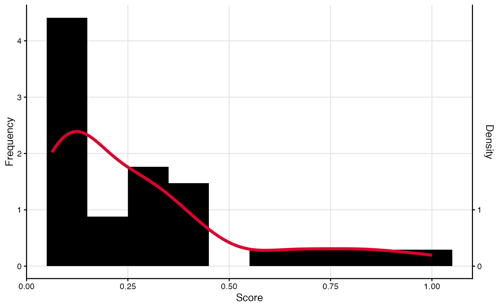

This function enables plots to be quickly, easily and consistently themed. This is achieved by setting a theme option, usually at the start of an R session, that enables the palette to be used for all autograph-consistent plotting methods. This includes thematic colours for backgrounds, highlights, sequential, divergent and categorical colour schemes. The function sets these palettes to options that are then used by the various plotting functions.
If no theme is specified (i.e. the function is called without argument),
the current theme is reported.
The default theme is "default".
This theme uses a white background, blue and red for
highlighting, and a blue-white-red divergent palette.
The themes can be changed at any time by calling stocnet_theme()
or its alias set_stocnet_theme() with a different theme name.
Other themes include those based on the colour schemes of various universities, including ETH Zurich, UZH, UNIBE, RUG, and Oxford. Other themes include "bw" for black and white, "crisp" for a high-contrast black and white theme, "neon" for a dark theme with neon highlights, and "rainbow" for a colourful theme. Most themes are designed to be colour-blind safe.
Value
This function sets the theme and palette(s) to be used across all stocnet packages. The palettes are written to options and held there.
Fonts
Some themes also set a preferred font for use in plots,
if available on the system (a check is performed).
In some cases, this includes a vector of options to try in sequence.
If none of the preferred fonts are available, a sans-serif font is used.
If you receive a warning about a missing font when setting a theme,
try installing one of the preferred fonts or make sure that the font is
available to R using extrafont::font_import() and extrafont::loadfont()
Custom
If you have specific needs or preferences, you can
set your own palettes or overwrite part of an existing one using options().
For example, to set a custom base color, you can use:
options(snet_highlight = c("#1b9e77", "#d95f02", "#7570b3")).
This will set a custom highlight color palette.
Similarly, you can set snet_div for divergent palettes
and snet_cat for categorical palettes.
Examples
stocnet_theme("default")
plot(manynet::node_degree(ison_karateka))
stocnet_theme("rug")
plot(manynet::node_degree(ison_karateka))
